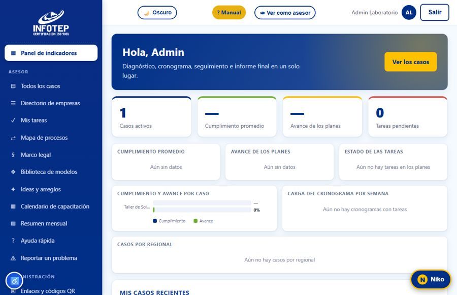

← Volver a los casos · Guía paso a paso con capturas
Hoja de ruta: tu primer caso en la Plataforma de Asesores
Léela completa antes de empezar (3 minutos). Si nunca usaste la plataforma, no te preocupes: te lleva de la mano y la guía explica cada pantalla con capturas.
Antes de empezar. Si una página no abre o aparece bloqueada: el filtro de seguridad (Fortinet) del Wi‑Fi de INFOTEP a veces bloquea sitios recién creados, como asesor.plataformajt.com. No es un error tuyo ni de la plataforma. Solución: desconéctate del Wi‑Fi de INFOTEP y entra con los datos móviles de tu celular; si trabajas en una computadora, conéctala al hotspot (punto de acceso o «compartir internet») de tu celular.
Abre la plataforma
Escanea el QR o escribe asesor.plataformajt.com y entra con el usuario y la clave de tu hoja.
Escanea el QR o escribe asesor.plataformajt.com y entra con el usuario y la clave de tu hoja.
1. Las etapas de cada caso
| ✔ | Etapa | Minutos | Dónde está explicado |
|---|---|---|---|
| ☐ | Entrar con tu usuario | 5 | Paso 1 de la guía |
| ☐ | Abrir tu caso (ya viene creado, con sus fotos) | 2 | Paso 3 de la guía |
| ☐ | Ficha de la empresa y objetivo | 5 | Paso 5 de la guía |
| ☐ | Registrar la visita (con fecha) | 3 | Paso 6 de la guía |
| ☐ | Escribir el hallazgo de cada foto (ya están cargadas) | 6 | Paso 7 de la guía |
| ☐ | Autopiloto (solo caso 1) y diagnóstico | 20 | Pasos 8 y 9 de la guía |
| ☐ | Plan de trabajo: 2 actividades en proceso o hechas | 5 | Paso 10 de la guía |
| ☐ | Kit de Excel: descargar, llenar y subir | 10 | Pasos 11 y 13 de la guía |
| ☐ | Documento con el Redactor (Niko) | 5 | Paso 12 de la guía |
| ☐ | Informe final | 4 | Paso 14 de la guía |
| ☐ | Carpeta de entregables y subida al Moodle | 15 | Paso 16 de la guía |
2. El menú de la izquierda

| Opción | Para qué sirve |
|---|---|
| Panel de indicadores | Resumen de tus casos y su avance. |
| Todos los casos | Aquí creas un caso nuevo y abres los que ya tienes. Empiezas aquí. |
| Directorio de empresas | Lista de las empresas atendidas. |
| Mis tareas | Las actividades pendientes de tus planes. |
| Marco legal | Leyes y reglamentos que respaldan los criterios. |
| Biblioteca de modelos | Ejemplos de documentos. |
| Ayuda rápida | Definiciones de los términos de cada pantalla. |
| Botón N (Niko) | Asistente de IA abajo a la derecha: contesta dudas de la plataforma. |
3. Reglas de oro
- Tus casos ya están creados con su nombre y sus fotos: ábrelos en «Todos los casos», no crees otros ni cambies el nombre.
- Si ves un botón «Sugerir hallazgo con IA», no lo uses: escribe tú el hallazgo.
- Las fotos ya están cargadas: tú solo escribes el hallazgo (15 letras o más).
- Objetivo de la ficha: 30 letras o más. Visita: pon la fecha.
- Diagnóstico: responde al menos el 70 % de los criterios.
- Plan: pasa 2 actividades a «En proceso» o «Hecho».
- Los botones con ✨ pueden tardar hasta 1 o 2 minutos: espera, no vuelvas a pulsar.
- Cada piloto trabaja casos distintos; nunca el mismo caso a la vez.
4. Palabras que vas a ver
Caso
Una asesoría a una empresa: guarda todo su trabajo.
Una asesoría a una empresa: guarda todo su trabajo.
Estrategia
El tema de mejora que se implementa (seguridad y salud, 5S, transformación digital, servicio al cliente).
El tema de mejora que se implementa (seguridad y salud, 5S, transformación digital, servicio al cliente).
Ficha
Datos de la empresa y el objetivo del servicio.
Datos de la empresa y el objetivo del servicio.
Diagnóstico
Lista de criterios que se responden SI, NO o No aplica para saber cómo está la empresa.
Lista de criterios que se responden SI, NO o No aplica para saber cómo está la empresa.
Hallazgo
Lo que observas en una foto: un problema o una buena práctica.
Lo que observas en una foto: un problema o una buena práctica.
Evidencia
La foto que respalda un hallazgo.
La foto que respalda un hallazgo.
Plan de trabajo / cronograma
Las actividades para corregir los NO, con responsable y semanas.
Las actividades para corregir los NO, con responsable y semanas.
Kit
Un Excel con fórmulas listo para llenar (riesgos, priorización, ahorro de tiempo, satisfacción).
Un Excel con fórmulas listo para llenar (riesgos, priorización, ahorro de tiempo, satisfacción).
Redactor / Niko
La IA que escribe el borrador de un documento; tú lo revisas.
La IA que escribe el borrador de un documento; tú lo revisas.
Contraparte
La persona de la empresa que te atiende.
La persona de la empresa que te atiende.
Expediente
La carpeta con todo lo del caso.
La carpeta con todo lo del caso.
Lista de cotejo
La lista con la que tu supervisora (que no estará en el aula) revisará después que no falte nada.
La lista con la que tu supervisora (que no estará en el aula) revisará después que no falte nada.
5. Si te pierdes
Ya tienes un caso de ejemplo terminado. Al entrar, en «Todos los casos» verás «Dulce Sazón Criolla (caso modelo resuelto)»: ábrelo para ver cómo queda un caso completo (ficha, visita, fotos con hallazgo, diagnóstico, plan avanzado e informe). No lo modifiques: solo míralo.
- Pulsa «Siguiente paso» en la mesa de trabajo del caso: la plataforma te dice qué sigue.
- Pulsa «Ayuda rápida» en el menú para ver qué significa cada término.
- Si una pantalla se queda cargando, espera 2 minutos antes de volver a pulsar.
- Pregunta a tu facilitador. Tu supervisora no estará en el aula, pero revisará tu carpeta después.
6. Otras herramientas de IA
¿No quieres usar la plataforma? También puedes apoyarte en otras herramientas de IA, como ChatGPT, Gemini o la que prefieras. Pégale la entrevista del dueño y los textos «Lo que se observa» de las fotos de tu expediente y pídele, por ejemplo: «Eres asesor empresarial de INFOTEP. Con esta información de la empresa, haz un diagnóstico (cada criterio SI, NO o No aplica con su evidencia), un plan de trabajo con responsable y semanas, y un borrador del documento de implementación y del informe final». Revisa siempre lo que te devuelva. Ojo: lo que hagas fuera de la plataforma no se califica automáticamente; tu supervisora lo revisa con la lista de cotejo, y de todos modos debes entregar los 3 archivos de cada caso. No escribas datos personales reales de nadie.
Plataforma de Asesores Empresariales · Desarrollado por Johan Tapia, PhD